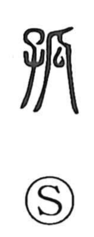

弧

Kun: | On: ko
arc ・ bow-shaped curve
Explanation
弧 is a phono-semantic character: 弓 ‘bow’ provides the sense, and 瓜 serves as the phonetic, its gourd’s crooked, bent outline suggesting both sound and image. Early lexicographers gloss it simply as a wooden bow—wood bent to form the bow’s body—and the word specifically evoked a bow with a gentle warp. From this core, the meaning extends to anything shaped like a bow, an arc.